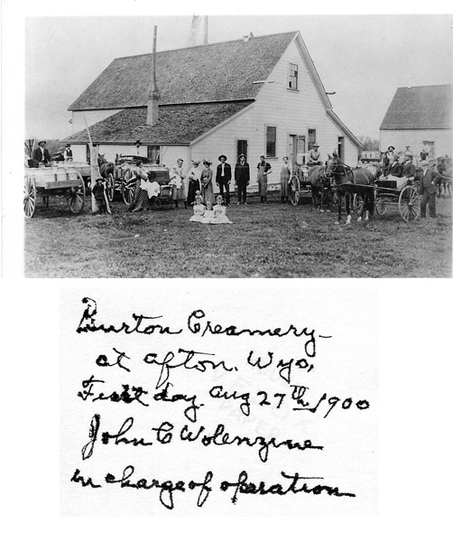
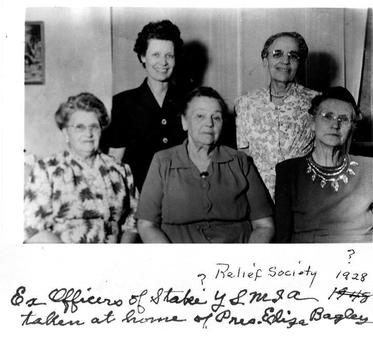
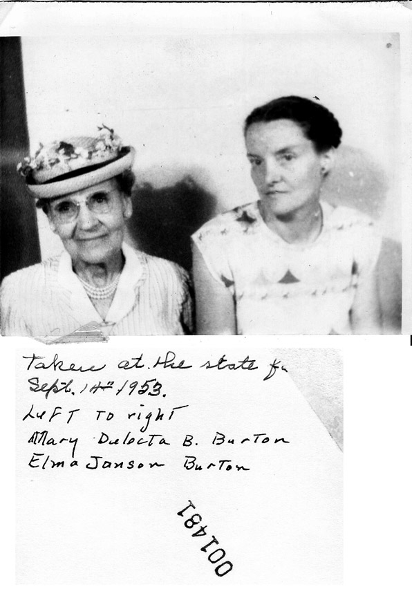
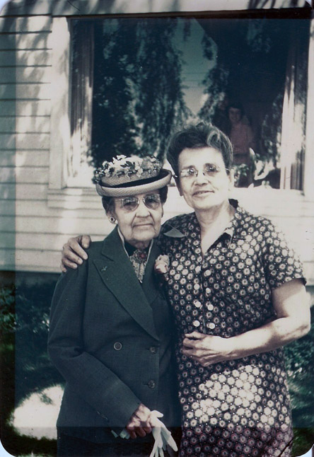

Mary Delecta Ballantyne Burton Photos
Home
Histories
Charts
Photos
Maps
Restricted
News
Info
Contact
Mary Delecta Ballantyne, age 6-8 months old.

The Burton family creamery, picture taken in 1900.

Mary Delecta in a presidency (1928 or 1948).

Mary Delecta in 1953.

With a family member in front of house.